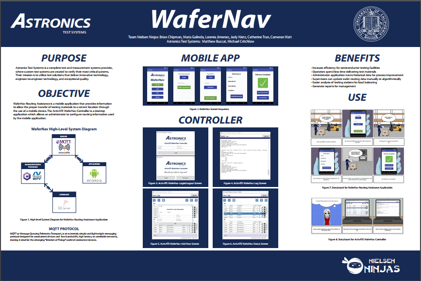

-
About
This project was for my senior design course at the University of California, Irvine. We partnered with Astronics Test Systems, a test and measurements system provider located in Irvine, California.
WaferNav, an Android mobile application, allows an operator to retrieve delivery information and to record each step along a three-part testing process of Load, Test, and Unload. ActivATE WaferNav, a desktop cell controller written in C#, allows an administrator to enter delivery information and to review historical data to ensure better load balancing for future cases.
-
The Goal
The goal of this project was to make the testing and delivery of wafers faster and more efficient. -
Steps to Achieve Goal
- Gather domain knowledge about the company and the current process they use to test and deliver wafers
- Understand the IoT protocol and how software components should communicate with each other

- Formulate documents and diagrams detailing the product, its core functionalities and goals, and review with sponsors
- Business Case
- Software Design Document
- Software Requirements Specification
- User Interface Design Document
- Create interactive prototype
View initial Android app prototype - Present prototype to sponsors for review
- Develop and test mobile and desktop app
- Present product to stakeholders on-site at Astronics
- Present final product at annual senior design showcase
Project Overview

Nielsen Ninjas


-
Skills
Requirements, User Interface Design, Mockups, Storyboards, Personas, Android Studio, Visual Studio, C#, XAML, WPF
-
Lessons Learned
- Importance of gaining domain knowledge
- How to communicate and work as a team
- How to elicit information from a client
- How to use WPF and Android Studio
-
Recognition
My team and I were nominated to present at Ingenuity 2017, an annual student technology showcase that highlights the top innovations from the Donald Bren School of Information and Computer Sciences and The Henry Samueli School of Engineering.
Ingenuity 2017
Presentation at Ingenuity